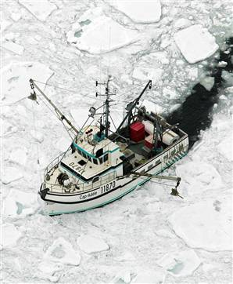
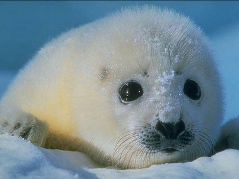
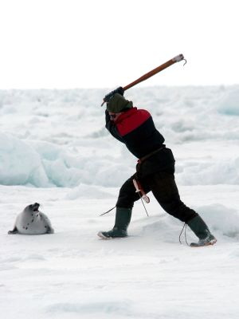
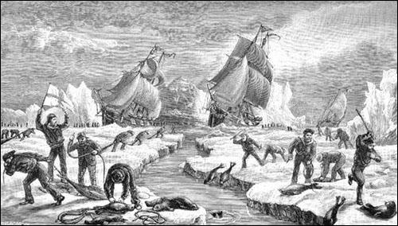
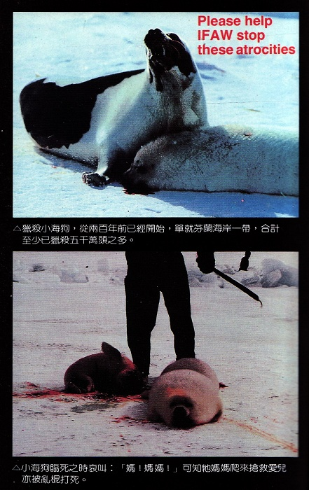
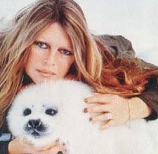
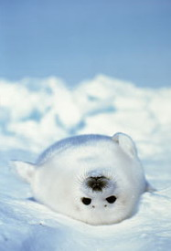
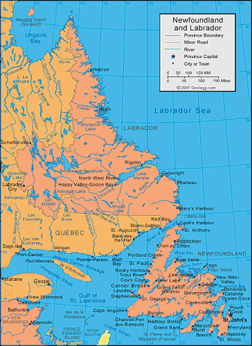
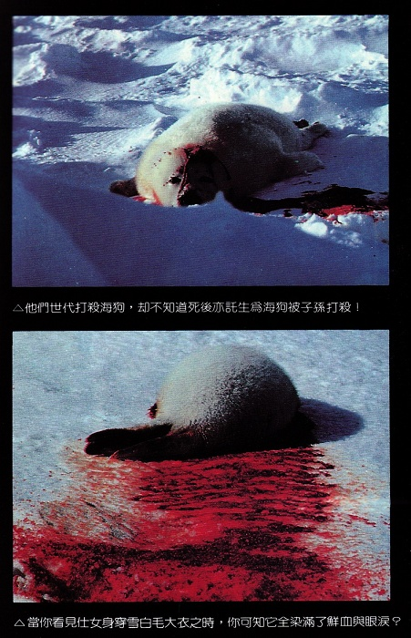

冰海悲音
冯冯
去去来来 /. 誊录
──当您看见仕女身穿雪白毛大衣时，您可知它全染满了鲜血与眼泪？
 猎杀小海狗，从两百年前已经开始，单就纽芬兰海岸一带，合计至少猎杀五千万头之多。假如加上格陵兰与苏联白令海峡一带的屠杀，合计至少已经七千万头。任何野生动物所受到人类的集体屠杀，都比不上这种白色小海狗被杀之多。
出猎的人，死于浮冰满布之冰海者，为数亦超过了一千名，受伤变成残废者，亦不知多少。但是猎人仍然不畏危险，趋之若鹜，年年去打杀小海狗，狂热一如淘金。
海狗事业也的确可比得上开采金矿，世界对于海狗产品之需求，以十九世纪为最钜。海狗的肥厚油脂，可提炼纯净无色无臭之纯油，曾经被用做制造肥皂、雪花膏、化装品，乃至于作为机器的润滑油，后来又用作制造人造奶油之原料。海狗皮制成柔软之女子手袋、男子钱包、学童书包、书皮、软皮鞋靴。
中国人最早发现海狗是一夫多妻制，雄性海狗有超过任何动物之性能力，可以在数月之内，配合数百头雌性海狗。中国人收购海狗睾丸，提炼成海狗丸，作为壮阳药之用。经过提炼之后的荷尔蒙，到底有没有效力，尚属疑问，但是海狗丸受到广大欢迎，却已是事实，业者赚了大钱，海狗却因此多了一个被猎杀之原因。纽芬兰、苏联、阿拉斯加、挪威，都更加大事捕杀海狗，以前仅及于小海狗取其白毛及油脂，后来更猎杀成年雄性海狗，取其睾丸，高价卖给中国某些药商，从此海狗更趋于灭种了。
纽芬兰地区，荒凉贫瘠，冰雪终年，别说农作，连树木都不能生长，纽芬兰人绝大多以捕鱼为生，纽芬兰渔场，是世界三大渔场之一，产鱼丰富。北欧各国均有远洋渔船来此捕鱼，苏联远洋渔船均在两三万吨以上，船上设有冷冻设备，蒸汽煮鱼及装罐机器，可以就在纽芬兰渔场即捕即装成罐头，用高温蒸汽蒸熟，船上有数百名男女工人，等于是一座座海上工厂。苏联渔船船队来捕鱼，动辄以千吨万吨计，独霸纽芬兰渔场。加拿大虽将渔界扩张到二百英里，但因加国在军事上个弱国，并无力量实际阻吓苏联船队。苏联渔船对于纽芬兰，已经构成严重之威胁，而且纽芬兰人穷困，无力购置现代化渔船，只有小型旧式渔船，渔获量自然无法与苏联及挪威、瑞典、丹麦等国相比。加拿大政府现在财政赤子多达一百亿元，无力亦无意帮助纽芬兰设立现代化之渔业船队。所以纽芬兰人，眼望着浩翰的世界最大渔场，却依然贫苦不堪，在此情形之下，纽芬兰人的渔期，一年也只有夏季几个月，到了秋季之后，北极海的巨大冰山与浮冰开始南移，冰雪封海，更无法出海捕鱼了。纽芬兰人冬天无工可做，失业率高达白分之八十，就是平常季节，失业率也在百分之十六至二十之间，成为全加拿大最贫苦之地。
贫穷的纽芬兰人，此时就划船，或者开了机动渔船，有些八十吨，有些两百吨，每一船有三四十人，到拉巴多海岸的外面，驶入浮冰之中，去打杀这些尚不会行动的乳犬。渔人用一根木棍照头一棒，把小海狗打晕，立即就趁它未冻僵之前，当场剥皮，往往小海狗尚在半昏半醒情况之下，被渔人活生生用刀剥取白色毛衣，鲜血淋漓，洒满冰原。那些母犬，见状扑来哀叫拯救爱儿，亦被乱棍打死。那种残酷之情形，任你是铁石心肠，也会觉得惨不忍睹。可是纽芬兰人并不觉得残忍，他们已经习以为常，认为与剥杀一条鱼并无若何区别，他们无动于衷于海狗微弱的哀求。
每年三月初，是海狗生产的季节，‘竖琴’海狗在北极海与巴芬海湾的浮冰上产下乳犬，它们状如初生之小狗，全身茸毛雪白，脸上两只大眼睛，稚气憨态，十分可爱，它们只会用两只前肢困难地在冰上爬行几步，后肢退化演变为鳍，不能行走。它们在第一个月，完全没有谋生本领，全靠母亲喂乳养活。小海狗此时胖嘟嘟，躺在冰上，等待妈妈捕鱼回来。此时冰上一望无际，成千成万的白色乳犬，它们会发出叫声，声音就是像人类婴儿。亦似是呼唤：“妈妈！妈妈！”若是妈妈久去不回，它们就哭泣，大眼睛流下眼泪，嘴巴不住哭唤：“妈妈！妈妈！”
白色的小海狗皮毛，经送到工厂洗净处理之后，运到美国与欧洲或日本、香港，变成了名贵无比的雪白毛大衣，高贵的仕女穿上这些雪白大衣之时，配上钻石耳环手镯，真是高贵无比，风华绝代，亦可曾想到，一件皮大衣需要多少只小海狗的皮毛才缀成？最少需要六十只小海狗的胸背部分，才缀成一件短大衣！
纽芬兰人打杀一只小海狗，所得几何呢？依现在之行情，只得到加币一元，即是大约八毛美金，或者四元港纸。他们一天大约每人可以打杀八百至一千只，所以算来就不少钱。他们一部分人专负责棒打海狗，另一部分专做活剥其皮，对分之下，在三个星期之内，每人也可赚得一万至一万五千元加币，可供半年的生活费用，所以这一种工作，对于他们来说，等于是开采金矿。至于外面人批评残忍，他们是不管的。他们每剥一只小海狗皮，只需时一分钟。
高贵的仕女们，可知道这些雪白的皮大衣都染上了无辜的小生命的鲜血？可知它们流着眼泪，望着渔人乞命？可知它们临死之时哀叫：“妈妈！妈妈！”可知它们的妈妈爬来抢救爱儿亦被乱棍打死？可知它们尚未断气，就被剥皮，鲜血染满冰原？可知那剥了皮的尸体心脏仍在微微跳动？可知母亲的哀求亦被打杀？
高贵的仕女们，为什么你们不改用人造的化学纤维毛大衣？人造的毛皮，既干净又不染有血腥，又不怕飞蛾来吃，不怕虫蛀，又容易处理。你们何苦与这些冤魂日夜相伴？小海狗的白毛，是飞蛾最爱吃的蛋白质，挂在衣橱内，不消几个星期，就会给吃光。
白色小海狗，被渔人剥皮之后，它们的尸体，就给搬去炼油，其渣滓则被用来制成狗食罐头，给美国加拿大的人喂饲家犬。
一八五零年，一百万头小海狗被杀，一九一四年，‘南方十字星’号破冰渔船，载有大约五十万张小海狗皮，返航时沉没，船上两百余名渔人与五十万张海狗皮，同归于尽。
在历史记录上，一八四零年，就一共有六百三十一艘渔船开往拉巴多海岸，一共杀死六十万头小海狗，当时之一千五百名猎人，被困于冰海，四百艘渔船被毁沉没。
一九三一年，出动打杀小海狗的渔人猎人，合计达五千名之多！被杀之小海狗数目，无法估计，总之不下于五百万只，几乎完全绝种！其情形震骇了全世界爱护动物人士！开始有人呼吁挽救小海狗，但正当不景气，呼声微弱，当年五百吨之捕鲸船‘维京’号也在纽芬兰沉没，全船挪威渔人与小海狗皮沉入海底。
一九六三年，一千四百六十名猎人乘坐八艘破冰船出猎，打杀四十九万头乳犬，以后数字每年减少，因为小海狗已渐趋绝种，越来越少。
一九六四年，据美国国家地理杂志专家统计，纽芬兰人打杀十七万头小海狗，占全部当年生产乳犬之百分之八十五，另外尚打杀六万只母犬。地理杂志发出警告：竖琴海狗已面临绝种！呼吁勿再滥杀！
一九七七年，五十万头小海狗被屠杀。一九七八年，加拿大政府准许纽芬兰人打杀二十万头小海狗，实际上当不只此数。
‘国际保护动物基金会’与一个‘绿色和平使者’组织，两者都是志愿的私人组织，每年都发起呼吁勿再打杀小海狗，因为地理杂志和一些人道主义团体，亦纷纷请求。但是纽芬兰人相应不理，变本加厉，打杀海狗更多。纽芬兰省长甚至下令保护猎海狗队伍。纽芬兰有一条法律：‘凡系飞机船只，非打猎性质，未得纽芬兰政府批准，而擅自接近小海狗五十尺以内者，视为威胁小海狗之生存，一经起诉有罪，初刑六个月至一年半。’
这条法律是对付前来反对捕杀小海狗之人士的。今年从国际来的反对人士，只能在远远的地方观望示威。美国加州国会议员赖安（后来被人民神庙教詹琼士杀死）与维州国会议员遮复士两氏来到观察，也被猎人咆哮咒骂，叫他们滚回美国去。美国国会已有人提出过要求加拿大制止滥杀小海狗。美国电视红星苏玛钿女士也来观察，她说将发起美国妇女抵制加拿大，勿买海狗毛皮做的大衣。
就在众目睽睽之下，数百猎人一人一棍，把伏卧在冰面上的初生小海狗，一棍打昏，或者尚未打昏，另一人就立刻动手趁热剥皮，血淋淋……那些母亲在一旁哭叫哀求，也被打杀……。

纽芬兰省长说这是纽人必须的谋生收入，又说海狗赶光了纽芬兰渔场的鱼，害纽人无鱼可捕，故此必须打杀海狗，外人无权干涉云云。
省长前些时又带了大队人马，到美国纽约及各大都市，宣传海狗毛皮多美多暖，小海狗肉又多么好吃多美味，省长到处都被小孩及青年人投掷鸡蛋番茄。
今年三月，纽约市、三藩市、西雅图、波士顿、华盛顿、西柏林、伦敦、海牙、温歌华、巴黎，到处都有群众集会示威‘反加’，反对加拿大准许剥杀小动物如海狸、小海狗等。伦敦约三千群众包围加拿大专员公署及赫德逊公司，竟有人持牌高喊‘剥加拿大首相的皮！’、‘打倒加拿大政府！’
赫德逊海湾公司是两百年前就往加拿大大开发的英国公司，以贩卖熊皮、狐皮、貂皮、海狸皮、海狗皮等等而发大财。两百年来，加拿大的野生动物已被杀到几乎绝种。赫德逊公司就是加拿大政府的前身，它组成加拿大政府。
照现在的情况，荷兰的人道主义者，包括荷兰佛教徒，与西德、比利时，都在努力要求禁止海狗毛皮输入。英国青年一代，颇多人受禅宗思想影响，很多人虽然无佛徒之名，其行为却都颇有佛性，英国或者不会禁止小海狗皮毛，但是社会抵制是必然会扩大的。
法国大选热烈，法国性感小猫女星碧姬芭铎(Brigitte Bardot)仍不忘发动法国妇女反对加拿大打杀小海狗，这位最喜欢小动物的老牌明星，从两年前起，即开始领导欧洲妇女及儿童反对屠杀小动物。碧姬而且是个素食的人，真是难得，有此仁心佛性。两三年前，我即曾写信给她，请她支持反对屠杀小海狗，她并无回信，相信她一定收到很多善良的人士去信求她，她不能一一回覆。我并不失望，因为看到她这几年的保护动物的表现，那已超过四倍的答覆了。碧姬已经成功，法国总统今年二月下令禁止加拿大小海狗毛皮入口。我只盼望碧姬能够影响欧洲各国的妇女小孩，各国一致抵制，小海狗毛皮无人要买，经济价值一失，自然就较少被打杀了。
其实纽芬兰人并不倚赖打杀海狗为主要生计，只可说是冬季外快，假如加拿大政府肯拿出改善经济政策来，训练这几百人做些技术副业，他们原无必要非打杀海狗不可。加拿大政府现在负外债一百一十亿，经济已经开始崩溃，加币贬值，一日三跌，好多事都未遑处理，自然就谈不到照顾几百渔人了。（加拿大人口只有两千万，失业者占了一百多万，已占了劳工人数的百分之十。）
现在我又寄望于美国电视红星苏玛钿小姐之努力，我将写信给她，请她一定发动全美影星推动爱护小海狗及小动物，如果她能找出可与碧姬相符之大牌女星来，情形就好得多了。我建议她请求素以慈善出名的苏非亚罗兰女士领导，这位世界影后，生一个儿子捐一座医院给贫民，与那位只知聚集大粒钻石与收集丈夫的玉婆大不相同。苏非亚没有大明星架子，或者她也会考虑参加这种反屠杀的运动。（附记：她后来已参加挽救小海狗运动。）
至于我自己，人微言轻，对社会没有什么影响力，又没有钱，我身体又不够强健，不能像‘绿色和平’那批青年那样，驾驶小船，在冰海中向猎人抗议屠杀──他们已有好几人被加国警方抓去坐牢，罪名是‘妨碍动物生存’。
我能做什么呢？我只有尽自己的一点微小力量，见人就劝说勿买小海狗皮，劝人勿屠杀小动物，我甚至劝人勿杀鸡鸭猪羊，我劝人吃素，我能做得到的固然太有限，但是我相信假如我们佛徒不断努力，积少成多，相信也可以收到若干影响的。让我们发起爱护小动物罢！
我知道中国人当中还没有太多人知道有关小海狗被屠杀绝种的残事，中国人也不似西方人之嗜好服饰使用小海狗皮，或者并不很需要我来讲这些。不过，我仍盼望中文读者知道这件事，佛友大家尽一己的微小力量，劝说世人勿屠杀小动物，劝女士们不要买那些染满血腥的皮衣，那些天然毛皮是很容易被飞蛾吃光的，又臭血腥，附满冤魂，穿了也不吉利。人造毛皮又不臭，又干净，又不怕被飞蛾吃。

还有一件事，我们佛友可以共同做到的，就是祈求佛佑，使纽芬兰外海 拉巴多Labrador Sea与格陵兰一带，在三月初的三个星期里，冰海冰结，使冰块不裂，冰块就不会向南浮动漂移，把冰面的乳犬成万成万送到纽芬兰猎人手中。
我以前从未想起可以这样做，今年二月底，我突然得此启示，于是我日夕集中脑波乞求佛陀。我不敢说有何效用，但是脑波感应的是不假的。一周前我写一稿给内明主编，说我感应到中国大陆西北部有强烈辐射爆炸，他看到我信时，这件事刚好发生，已见之新闻报导了，那不是我第一次的感应。
我日夕祈求冰封拉巴多冰海，也不知是否巧合？今日电视新闻所见，拉巴多海岸，巴芬海峡，冰厚二十余英尺。芬兰有挪威渔船二十艘，全给阻挡，不能入内捕杀小海狗！
加拿大政府气象局宣布这是纽芬兰五十年来最奇寒最厚冰的一次，无法解释。纽芬兰渔人着急，因为假如冰再不解，三周之后，小海狗百万均可游水逃生，它的白毛也蜕尽了，变成灰褐，没有价值了。
我亲爱的佛友，我们怎么解释这种巧合？当然，除了我之外，一定尚有很多人也可能这样祈求，如果我说是我祈祷而得，就是僭妄，我有何能力呢？我连本身的烦恼都解决不了，唯一有的只是一点佛性与愚痴吧！我请求读者参加我这一项祈求，今年季节将过尽，我们来祈求明年三月（阳历）初的三个星期冰封纽芬兰外海吧！我相信你我合力祈求，会增加力量！
我自己今年的祈求，是第一次，也因我受到世俗的魔障太多，失去了清净专心，现在已经心乱了，效力甚微。
最新消息说，加拿大政府派出破冰船‘北极号’赶往北方破冰，帮助渔船进入冰阵之中去打杀小海狗。他们已开始打杀了一些，但为数不多，我有何能力呢？我只看见，他们打杀的都是他们自己的父兄祖宗一灵托生的小海狗！他们世代打杀海狗，却不知道死后也托生为海狗被子孙打杀！他们不知道流的鲜血眼泪，都正是他们自己的鲜血哪！
我真不知怎样才能使这些嗜杀狰狞的猎人领悟因果！看他们现在洋洋得意的样子！
我如果说，屠坊割下的猪肉牛肉，其实都是轮回来投的某些人士之肉，有人信吗？只有佛子知道我不曾说谎，只有佛子知道的确可以看见动物的来历，前生因果，来生报应。
人类必定要屠杀动物，吃它们的血肉才可以维生吗？某些宗教说：凡是天上飞的，地面跑的，水中游的，我都赐给你们作为食物。这句话也不过是某些人编造成书而已。我们有什么权利屠杀他人？
我看到纽芬兰某一宗教神父特为出发捕杀海狗的船队祝福平安丰收，我只觉得心寒！那都绝不是宗教的原意！宗教已经被人篡改得太多了！

【后记】：破冰船‘北极号’后来亦被困于冰海冰阵之中，加拿大政府派出空军直升飞机前往救出舰上人员。我亦曾经祈求佛佑小海狗，使冰困‘北极号’。这场祈求，原属奢求，不意亦有巧合之应验，令我感惶不住！又：‘北极号’被弃船，困于冰海中半年之久。
相关报导
Canada’s Cruel 2007 Seal Hunt 记录片
保罗麦卡尼现场记录：加拿大虐杀海狗(2006年)
About the Canadian Seal Hunt
永忏楼随笔之廿六──《冰海悲音》
原载香港《内明》第80期：1978年11月1日
原载香港《内明》第81期：1978年12月1日
书名：夜半钟声
作者：冯冯
出版：天华出版事业股份有限公司